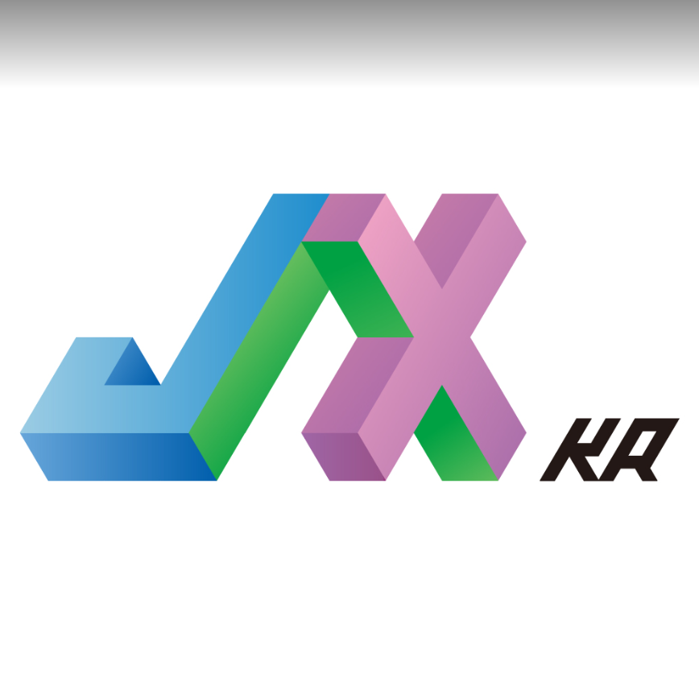

JAX-KR에 오신 여러분 환영합니다.
JAX-KR 은 모두의연구소에서 진행하고 있는 JAX/Flax LAB 에서 나온
결과물중 하나인 JAX Documenataion을 한글화하는 작업입니다.
JAX뿐만 아니라 Flax 등 많은 프로젝틀르 현재 진행하고 있습니다. 관심있는 분들은 언제든지 저에게 메일(dudqls4019@gmail.com) 으로 부탁드립니다.
참고
JAX는 고성능 수치 계산을 위해 오토그래드와 XLA를 결합한 것입니다.